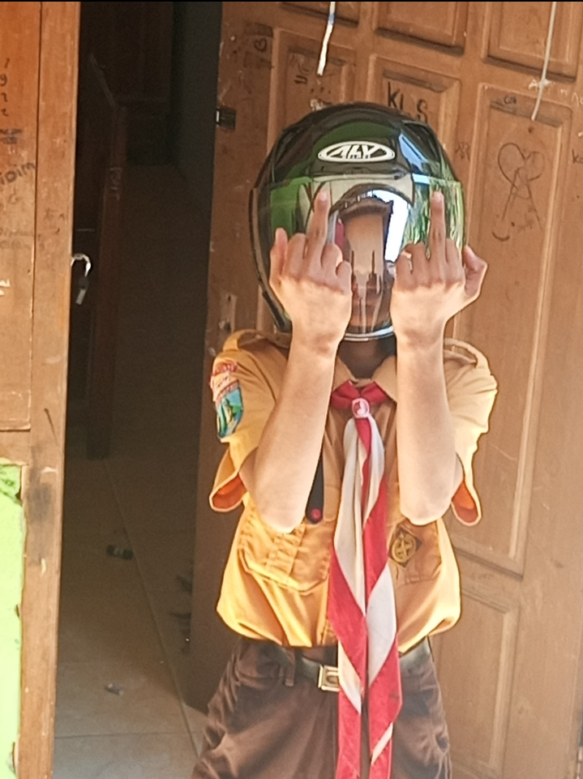
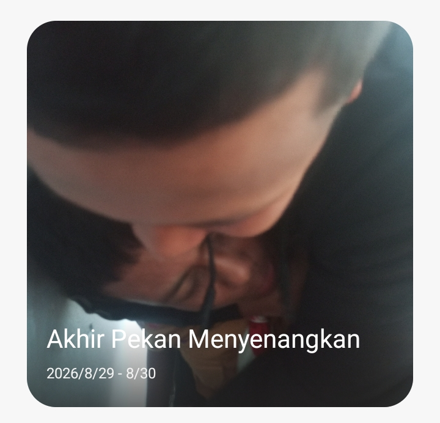

Otmasbu adalah sebuah legenda organisasi sekolah "MTS bahrul ulum", dahulunya sekolah ini diminati banyak orang, namun karna suatu kesalahan sekolah ini menjadi bangkrut dan akhirnya tutup pada tahun 1989.
Tekan tombol dibawah untuk informasi yang lebih mendalam
pada tahun 1988 tepat 1 tahun sebelum sekolah ditutup, jendral yang pernah sekolah di situ bernama "ucok prindapan22pro" pernah berkata
ja***k tenan, sekolah tem***
yang berarti hinaan terhadap sekolah ini kerna banyak kasus yang beredar diantaranya judol, korupsi uang amal, dan lain lain. dan sekarang jendral ucok di sandra dan ini dokslinnya
tekan lihat untuk melihat dokumen asli


itulah akibatnya menyerang antek antek sekolah, anda bisa menonton film gratis untuk bonus
Tekan tombol untuk Menonton